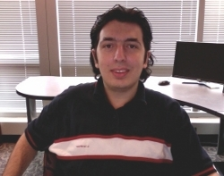

Acar Tamersoy
|
 |
Acar Tamersoy, Ph.D.
() |
Education
Ph.D., Computer Science, Georgia Institute of Technology, 2016
Advisor: Duen Horng (Polo) Chau, Co-advisor: Shamkant B. Navathe
Thesis: Graph-based Algorithms and Models for Security, Healthcare, and Finance
Committee: Duen Horng (Polo) Chau, Shamkant B. Navathe, Munmun De Choudhury, Rahul Basole, and Kevin Roundy
M.S., Biomedical Informatics, Vanderbilt University, 2011
Advisor: Brad Malin
Thesis: Anonymization of Longitudinal Electronic Medical Records for Clinical Research
Committee: Brad Malin, Josh Denny, Tom Lasko
B.S., Computer Science and Engineering, Sabanci University, 2009
Advisor: Yucel Saygin
Awards
Best Demonstration Award, Honorable Mention at the 2017 ACM International Conference on Management of Data (SIGMOD)
Symantec Research Labs Graduate Fellowship 2014–2015
Dilek Sabanci Scholarship 2007–2009
Industry Experiences
Academic Contractor, Yahoo Research, Fall 2014–Summer 2015
Ph.D. Research Intern, Symantec Research Labs, Summer 2013–2014
Undergradute Research Intern, Fraunhofer IAIS, Summer 2008
Publications
Smoke Detector: Cross-Product Intrusion Detection With Weak Indicators
Kevin A. Roundy, Acar Tamersoy, Michael Spertus, Michael Hart, Daniel Kats, Matteo Dell'Amico, Robert Scott
In Proceedings of 33rd the Annual Computer Security Applications Conference (ACSAC), 2017
VIGOR: Interactive Visual Exploration of Graph Query Results
Robert Pienta, Fred Hohman, Alex Endert, Acar Tamersoy, Kevin Roundy, Chris Gates, Shamkant Navathe, Duen Horng Chau
IEEE Transactions on Visualization and Computer Graphics (TVCG), Presented at the 2017 IEEE Conference on Visual Analytics Science and Technology (VAST), 2017
Analysis of Smoking and Drinking Relapse in an Online Community
Acar Tamersoy, Duen Horng Chau, Munmun De Choudhury
In Proceedings of the 7th ACM Conference on Digital Health (DH), 2017
Visual Graph Query Construction and Refinement
Robert Pienta, Fred Hohman, Acar Tamersoy, Alex Endert, Shamkant Navathe, Hanghang Tong, Duen Horng Chau
In Proceedings of the 2017 ACM International Conference on Management of Data (SIGMOD), 2017 (Demonstration)
Best Demonstration Award, Honorable Mention
VISAGE: Interactive Visual Graph Querying
Robert Pienta, Acar Tamersoy, Alex Endert, Shamkant Navathe, Hanghang Tong, Duen Horng Chau
In Proceedings of the 13th International Working Conference on Advanced Visual Interfaces (AVI), 2016
Generating Graph Snapshots from Streaming Edge Data
Sucheta Soundarajan, Acar Tamersoy, Elias B. Khalil, Tina Eliassi-Rad, Duen Horng Chau, Brian Gallagher, Kevin Roundy
In Proceedings of the 25th International World Wide Web Conference (WWW), 2016 (Poster)
Characterizing Smoking and Drinking Abstinence from Social Media
Acar Tamersoy, Munmun De Choudhury, Duen Horng Chau
In Proceedings of the 26th ACM Conference on Hypertext and Social Media (HT), 2015
Effort-based Detection of Comment Spammers
Acar Tamersoy, Hua Ouyang, Duen Horng Chau
In Proceedings of the 36th IEEE Symposium on Security and Privacy (S&P), 2015 (Poster)
Identifying Successful Investors in the Startup Ecosystem
Srishti Gupta, Robert Pienta, Acar Tamersoy, Duen Horng Chau, Rahul C. Basole
In Proceedings of the 24th International World Wide Web Conference (WWW), 2015 (Poster)
Understanding Variations in Pediatric Asthma Care Processes in the Emergency Department Using Visual Analytics
Rahul C. Basole, Mark L. Braunstein, Vikas Kumar, Hyunwoo Park, Minsuk Kahng, Duen Horng (Polo) Chau, Acar Tamersoy, Daniel A. Hirsh, Nicoleta Serban, James Bost, Burton Lesnick, Beth L. Schissel, Michael Thompson
Journal of the American Medical Informatics Association (JAMIA), 22(2), 2015
Interactive Querying over Large Network Data: Scalability, Visualization, and Interaction Design
Robert Pienta, Acar Tamersoy, Hanghang Tong, Alex Endert, Duen Horng Chau
In Proceedings of the 20th ACM Conference on Intelligent User Interfaces (IUI), 2015 (Poster)
Guilt by Association: Large Scale Malware Detection by Mining File-relation Graphs
Acar Tamersoy, Kevin Roundy, Duen Horng Chau
In Proceedings of the 20th ACM SIGKDD International Conference on Knowledge Discovery and Data Mining (KDD), 2014
Large-scale Insider Trading Analysis: Patterns and Discoveries
Acar Tamersoy, Elias Khalil, Bo Xie, Stephen L. Lenkey, Bryan R. Routledge, Duen Horng Chau, Shamkant B. Navathe
Springer Social Network Analysis and Mining (SNAM), 4(1), 2014
MAGE: Matching Approximate Patterns in Richly-Attributed Graphs
Robert Pienta, Acar Tamersoy, Hanghang Tong, Duen Horng Chau
In Proceedings of the 2nd IEEE International Conference on Big Data (BigData), 2014
Exploring Clinical Care Processes Using Visual and Data Analytics: Challenges and Opportunities
Vikas Kumar, Hyunwoo Park, Rahul C. Basole, Mark Braunstein, Minsuk Kahng, Duen Horng Chau, Acar Tamersoy, Daniel A. Hirsh, Nicoleta Serban, James Bost, Burton Lesnick, Beth Schissel, Michael Thompson
In Proceedings of the 2014 ACM SIGKDD International Conference on Knowledge Discovery and Data Mining Workshop on Data Science for Social Good (KDD DSSG), 2014
Inside Insider Trading: Patterns & Discoveries from a Large Scale Exploratory Analysis
Acar Tamersoy, Bo Xie, Stephen L. Lenkey, Bryan R. Routledge. Duen Horng Chau, Shamkant B. Navathe
In Proceedings of the 5th IEEE/ACM International Conference on Advances in Social Networks Analysis and Mining (ASONAM), 2013
Click Traffic Analysis of Short URL Spam on Twitter
De Wang, Shamkant B. Navathe, Ling Liu, Danesh Irani, Acar Tamersoy, Calton Pu
In Proceedings of the 9th IEEE International Conference on Collaborative Computing: Networking, Applications and Worksharing (CollaborateCom), 2013
Anonymization of Longitudinal Electronic Medical Records
Acar Tamersoy, Grigorios Loukides, Mehmet Ercan Nergiz, Yucel Saygin, Bradley Malin
IEEE Transactions on Information Technology in Biomedicine (TITB), 16(3), 2012
Instant Anonymization
Mehmet Ercan Nergiz, Acar Tamersoy, Yucel Saygin
ACM Transactions on Database Systems (TODS), 36(1), 2011
Anonymization of Administrative Billing Codes with Repeated Diagnoses through Censoring
Acar Tamersoy, Grigorios Loukides, Joshua C. Denny, Bradley Malin
In Proceedings of the 34th Annual Symposium of American Medical Informatics Association (AMIA), 2010
Patents
Systems and methods for establishing reputations of files
Kevin Alejandro Roundy, Acar Tamersoy, Sourabh Satish
U.S. Patent 9,323,924Systems and methods for detecting malware using file clustering
Acar Tamersoy, Kevin A. Roundy, Daniel Marino
U.S. Patent 9,185,119Systems and methods for adjusting suspiciousness scores in event-correlation graphs
Acar Tamersoy, Kevin Roundy, Sandeep Bhatkar, Elias Khalil
U.S. Patent 9,148,441Systems and methods for using event-correlation graphs to detect attacks on computing systems
Kevin Roundy, Fanglu Guo, Sandeep Bhatkar, Tao Cheng, Jie Fu, Zhi Kai Li, Darren Shou, Sanjay Sawhney, Acar Tamersoy, Elias Khalil
U.S. Patent 9,141,790
Professional Activities
Program Committee Member
ACM SIGKDD International Conference on Knowledge Discovery and Data Mining Workshop on Interactive Data Exploration and Analytics (KDD IDEA), 2016, 2017
ACM SIGKDD International Conference on Knowledge Discovery and Data Mining Workshop on Mining and Learning with Graphs (KDD MLG), 2018
ACM SIGKDD International Conference on Knowledge Discovery and Data Mining Workshop on Outlier Detection De-constructed (KDD ODD), 2018
Invited Reviewer
ACM Conference on Human Factors in Computing Systems (CHI), 2017
ACM Computing Surveys (CSUR), 2017
ACM SIGKDD International Conference on Knowledge Discovery and Data Mining (KDD), 2013, 2014, 2016
ACM International Conference on Web Search and Data Mining (WSDM), 2016
Annual Computer Security Applications Conference (ACSAC), 2017
European Conference on Machine Learning and Principles and Practice of Knowledge Discovery in Databases (ECML/PKDD), 2013
ECML/PKDD Workshop on Privacy and Security issues in Data Mining and Machine Learning (ECML/PKDD PSDML), 2010
IEEE International Conference on Data Engineering (ICDE), 2012
Journal of the American Medical Informatics Association (JAMIA), 2010, 2012
Privacy Enhancing Technologies Symposium (PETS), 2011
SIAM International Conference on Data Mining (SDM), 2016